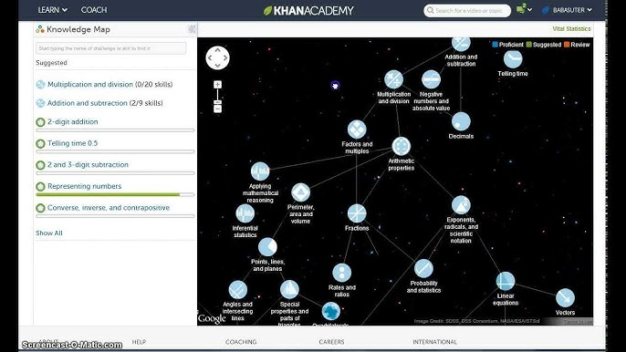
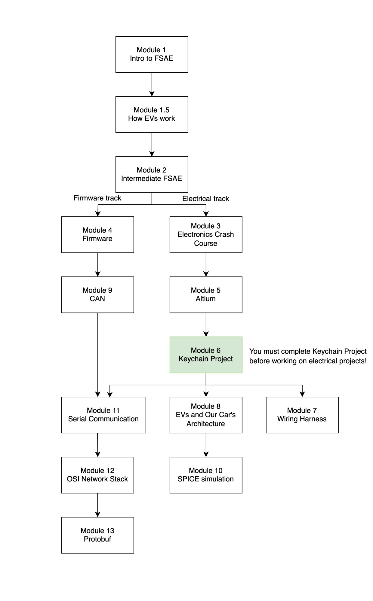
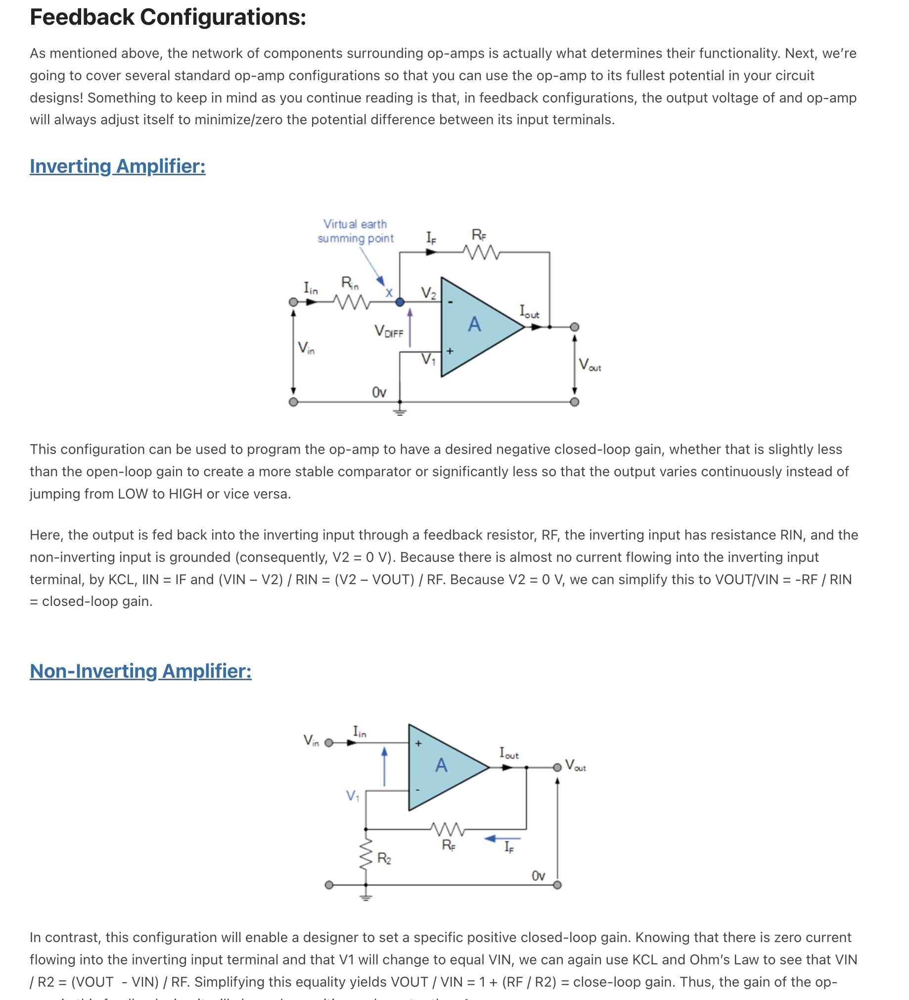
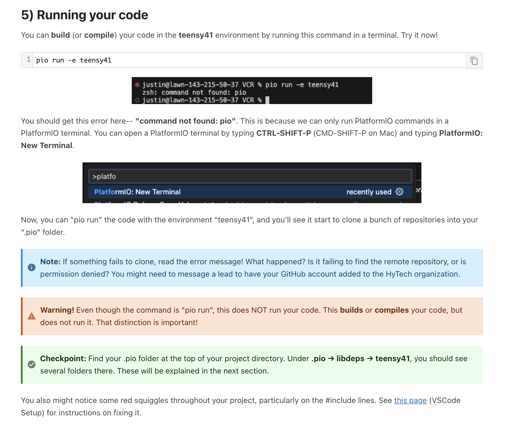
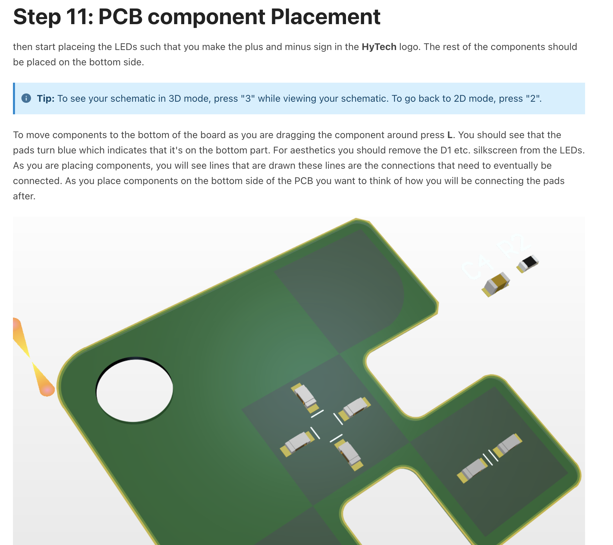

HyTech Racing Electrical Training Curriculum
Table of Contents
Overview
At HyTech Racing, our car becomes more complex every year. As a result, the learning curve for new members becomes steeper every year. I wanted to increase two things: the number of actively-contributing members, and the contributions of each member. To this end, I designed a guided, asynchronous set of training modules that forms a semester-long curriculum.
Situation & Design
As I alluded to in the introduction, HyTech Racing struggles a little with member retention. To give some context, when I joined the team, there were over 70 people who were interested in joining the electrical subteam. By the end of the year, there were only 4 or 5 who still came, but every member was routinely staying in the shop past 4AM.
I often wondered how both things could be true– How can we have so much interest in the club, and yet so few people who can do the work? So, to mitigate this problem, I decided to create a full electrical training curriculum with the following priorities:
- Make it easier, but don't lower the bar.
- Resources should be asynchronous.
- Resources should be guided.
Goal #1's motivation is clear. We don't want our simplification to compromise the car's performance. Our members still need to be responsible for learning the same content, it just should be easier to do so.
Goal #2 stemmed from my own personal experience. I often find that self-paced study is the most effective for my own understanding, since I can read (and re-read) an article or textbook until I really understand it. At HyTech, it's far more important to really understand certain concepts, while in classes, it's usually possible to get by with a cursory understanding. By making resources asynchronous, a highly-motivated member can learn all the concepts at their own pace.
Goal #3 also stemmed from my own experience, but from a different angle. I often found myself stuck trying to learn a particulary obscure concept. When I finally ended up asking one of the leads about it, they'd say "Oh, you don't really need to know that. This is the essential part for now, and the rest will make sense later." To prevent other people from having this experience, I felt that frequent "checkpoints" would give members the opportunity to ask questions and make sure they're on the right track.
Execution
When I started using Khanacademy in 3rd grade to learn math, they had a feature called the "knowledge map".

Figure 1: Screencapture of KhanAcademy's knowledge map from the early 2010s.
I always found this feature super interesting because it clearly showed what skills depended on each other as a prerequisite.

Figure 2: Screencapture of HyTech's "knowledge map" indicating which modules are prerequisites for others.
After identifying the essential skills, culminating in a small board design project (a.k.a Keychain Project), I drew this map. Some of the earlier modules take only an hour or two to complete, but some of the later ones could take a few weeks. The most important thing, though, was that the expectations were clear. When students joined the team, instead of being stonewalled by a huge amount of required prerequisite knowledge, they could see what topics they must study to be onboarded ASAP.
Then, after defining the learning targets of each module (maybe my grade school teachers were onto something), all we had to do was write the content. I wrote several of the modules myself, but I had significant help for the electronics crash course, Altium training, and the Keychain project.
Here are a few screenshots from the curriculum:

Figure 3: From Module 3 - Electronics Crash Course. Showing Inverting and Non-Inverting amplifier configurations with their ideal equa

Figure 4: From Module 3 - Intro to Firmware. Written directions explaining how to compile code in PlaformIO environment.

Figure 5: From Module 6 - Keychain Project. Showing 3D view of board-in-progress with through-hole components.
In total, there are over 100 pages of written content for new members to study. There's definitely room for the scope of the content to expand, but we would just need to write more advanced modules and append them to the end of the knowledge map. As it currently stands, first-years can study a clearly-defined set of skills and begin contributing to the team in meaningful ways.
Outcome
The number of super-productive freshman is incredibly high. There are 7-8 freshman in firmware alone who are actively completing assignments and submitting pull requests. In comparison, there were only around 5 freshman in the entire electrical/firmware subteams one year ago. There are also a few new members who have already spent more time designing and routing PCBs than I have. I'm super proud of these students and super optimistic about next year's electrical team. I can't take much credit for their success, since they are all highly-motivated and super smart, but I'd like to think that my training curriculum played a role in their involvement with the club.